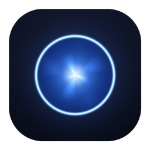

Version …
A local, privacy-first voice assistant. Everything runs on your Mac.
The update check is the only time this window goes online — it asks GitHub for the latest release and sends nothing about you.